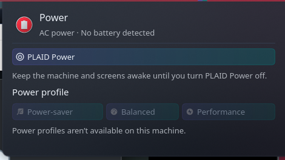
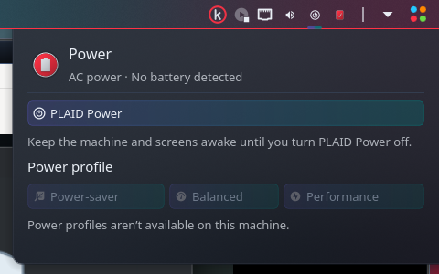

See your battery details
Check charge percentage, charging state, battery size in Wh, charge cycles, estimated time remaining or to full, and charge or discharge rate. Available readings depend on your hardware.

KDE Plasma 6 · Free & open source
Battery details, power profiles, and a keep-awake switch, right in your panel.
Check your battery, choose an available power profile, or turn on PLAID Power to keep your computer and screens awake. The compact popup follows your Plasma theme and color scheme.
Check charge percentage, charging state, battery size in Wh, charge cycles, estimated time remaining or to full, and charge or discharge rate. Available readings depend on your hardware.
Switch between power-saver, balanced, and performance when your system supports them. Unsupported profiles stay disabled.
Temporarily prevent automatic suspend, screen dimming or switch-off, and automatic session locking. Turn PLAID off to release the override. Manual lock and shutdown remain available.
PLAID uses temporary session inhibitors instead of rewriting KDE settings. Its state is shared across widget instances and survives a Plasma restart. Logging out releases it; it does not automatically turn on at your next login.


Download the plasmoid from the GitHub release. In Plasma’s widget browser, choose Install Widget From Local File, then select the downloaded package.
Add kOMA Power Control from the widget browser. Click its panel icon to open battery information and power controls.
Select an available power profile or enable PLAID Power. The widget prepares its user service on first activation; that setup does not require administrator access.
Requires KDE Plasma 6, a systemd user session, Python 3, dbus-python, PyGObject, and UPower. Install power-profiles-daemon for supported power-profile controls. On Arch and EndeavourOS, the Python packages are python-dbus and python-gobject.
Battery metrics and available profiles depend on hardware and running services. Desktop PCs without batteries remain supported. PLAID Power leaves other applications’ inhibitors intact, so turning it off does not override another application’s keep-awake request.
Free, open source, and MIT licensed. Download version 0.1.0 or explore the source on GitHub.
Download Power Control → View source →Requires KDE Plasma 6. See the requirements above for Python and system services.